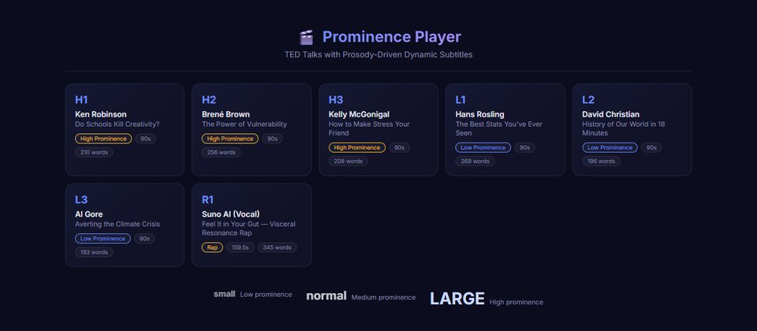
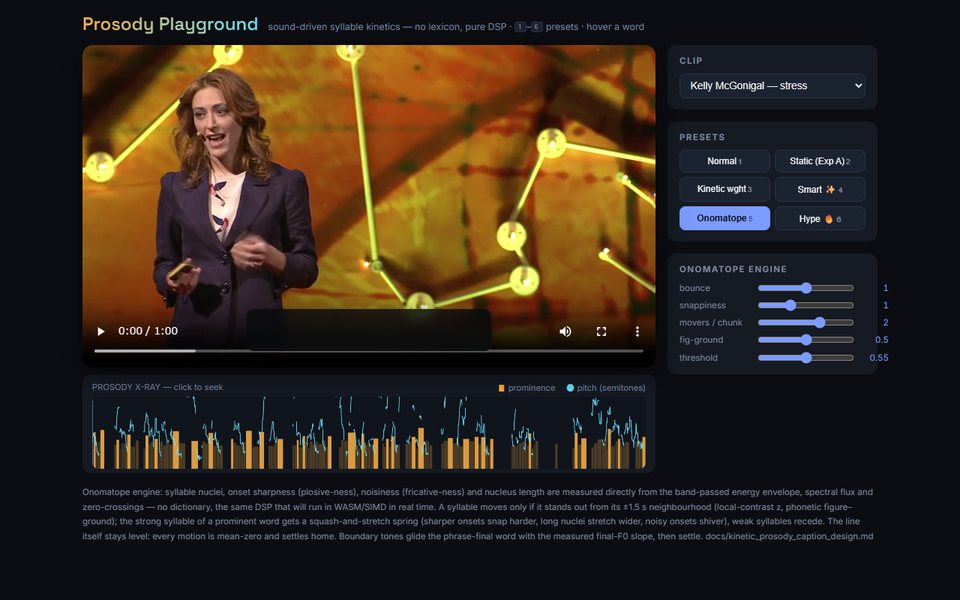
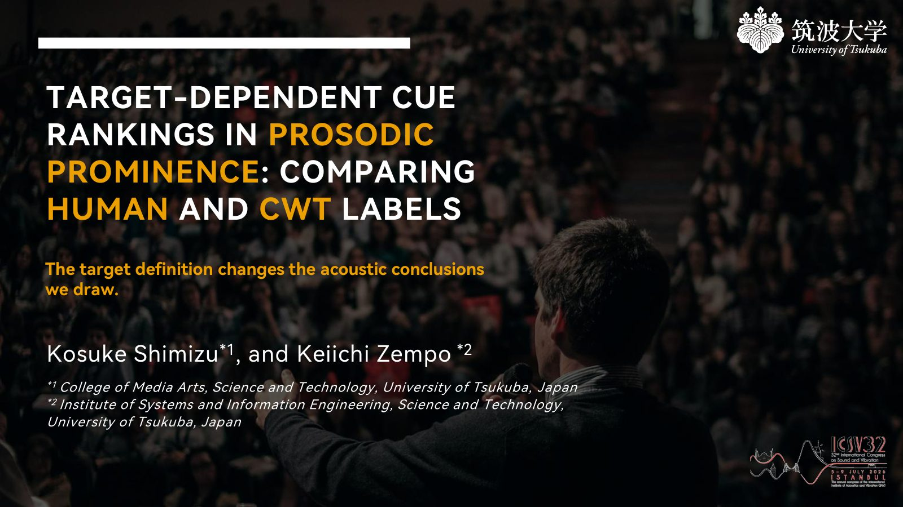
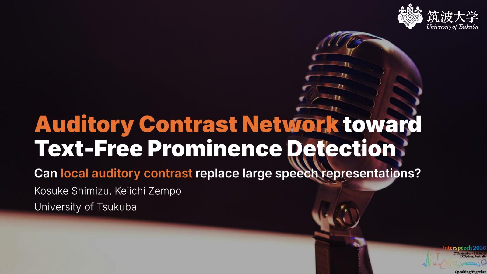

Projects / 研究
声の強調
話し手が強めた語を見つけ、字幕で見せ、身体で感じられるようにする

話すとき、人は一部の語を長く、強く、あるいは声の高さを変えて発音し、ほかの語より際立たせます。言語学ではこれをプロミネンスと呼びます。字幕や書き起こしではこの情報が失われ、どの語も同じ見た目になります。このプロジェクトでは、どの音響的な手がかりが語を際立たせるのかを調べ、ブラウザ上でリアルタイムに動く軽量な検出器を作り、その結果を二つの形で聞き手に届けています。
モデル化については、ICSV32で、同じ語に人が付けた強調ラベルと連続ウェーブレット変換（CWT）で求めたラベルを同じ音響手がかりから予測し、両者からは重要な手がかりについて同じ結論が得られないことを示しました。Interspeech 2026では、テキストを使わず、語の長さ・エネルギー・スペクトルの手がかりで各語を前後の語と比べる、パラメータ数238以下のモデル Auditory Contrast Network を発表しました。
提示については、検出した強調を字幕の文字の大きさや動きに反映させるデモを、マイク入力のライブ字幕、TEDトークの抜粋を再生するプレーヤー、動く文字の試作環境の三つの形で公開しています。また Visceral Resonance では、同じ強調の信号で聞き手の腹部に電気的筋刺激を与えるシステムを作り、Augmented Humans 2026でデモ展示しました。
構成
-
01
強調が見える字幕
話された内容に加えて、どう話されたかも伝える字幕
通常の字幕は、何が話されたかは伝えても、話し手がどの語を強めたかは伝えません。ここでは検出した強調を字幕そのものに反映させる三つのデモを作りました。マイク入力のライブ字幕では文字の大きさ、TEDトークの抜粋では大きさと太さ、動く文字の試作環境では音節の動きに強調を割り当てています。いずれもブラウザで動作し、強調は声の音響特徴から推定しています。
- 01.1
-
01.2
TEDトーク字幕プレーヤー
4種類の字幕を切り替えて見比べられるTEDトークの抜粋
6本のTEDトークから90秒ずつを切り出し、強調のはっきりした話し方の3本と平坦な話し方の3本に分けて、語単位で同期した字幕付きで再生します。字幕は、全語同じ大きさ、品詞に応じた大きさ、Auditory Contrast Networkによる強調の推定値に応じた大きさと太さ、品詞と強調の組み合わせ、の4種類を切り替えて見比べられます。
- プレーヤーを開く
ksk432.com/projects/speech-emphasis/ted-player/

- プレーヤーを開く
-
01.3
動く字幕
音だけを手がかりに、強められた音節が動く字幕の試作環境
TEDトークの抜粋の字幕を、発音辞書を使わず信号処理だけで音節ごとに動かす試作環境です。エネルギー包絡、スペクトルフラックス、ゼロ交差率から音節核、立ち上がりの鋭さ、雑音らしさ、母音の長さを測り、前後1.5秒の中で際立つ音節だけを動かします。静的表示、太さの変化、オノマトペ風の動きなどをプリセットで切り替えられます。
- プレイグラウンドを開く
ksk432.com/projects/speech-emphasis/moving-captions/

- プレイグラウンドを開く
-
02
Visceral Resonance
話し手の強調を、腹部への電気刺激として感じる
話し手の声から強調をリアルタイムに検出し、市販の音声駆動型EMS機器で聞き手の腹部に電気的筋刺激として伝えるシステムです。腹筋の収縮が腹腔内圧を変え、腹の底で感じるような感覚につながりうるという仮説に立ち、Augmented Humans 2026でデモ展示しました。同会議のワークショップ論文（単著）では、感覚間の変換に残す自由度を主体性の観点から論じています。
- 2026.03DemoVisceral Resonance: Augmenting Speech Listening with Prominence-Synchronized Electrical Muscle StimulationKosuke Shimizu, Ron Lian Nikolaus Tan, Shogo Fukushima, Keiichi ZempoAugmented Humans 2026 Demo Track, pp. 840–842 · DOI 10.1145/3795011.3797423
- 2026.03WorkshopDesigning Degrees of Freedom in Modality Translation: Agency in Inclusive Augmented PerformanceKosuke ShimizuAugmented Humans 2026 Workshop: Reimagining Human Augmentation through Disability-Led Performance
-
03
強調のモデル化
どの音響的な手がかりが語を際立たせるのか
語を際立たせる音の要因を二つの論文で調べました。ICSV32では、人による強調ラベルとCWTによるラベルを同じ手がかりで予測し、語の長さ以外に役立つ手がかりがラベルごとに異なることを示しました。Interspeech 2026では、3つの音響特徴と最大238個のパラメータからなるAuditory Contrast Networkが、別コーパスへの転移で9460万パラメータのwav2vec2と同程度の性能を示しました。

ICSV32 発表スライド 
INTERSPEECH 2026 発表スライド - 2026.07ProceedingsTarget-Dependent Cue Rankings in Prosodic Prominence: Comparing Human and CWT LabelsKosuke Shimizu, Keiichi Zempo32nd International Congress on Sound and Vibration (ICSV32)
- 2026.10ProceedingsAuditory Contrast Network for Text-Free Prominence DetectionKosuke Shimizu, Keiichi ZempoProc. INTERSPEECH 2026, pp. 3696–3700 · ISCA Archive